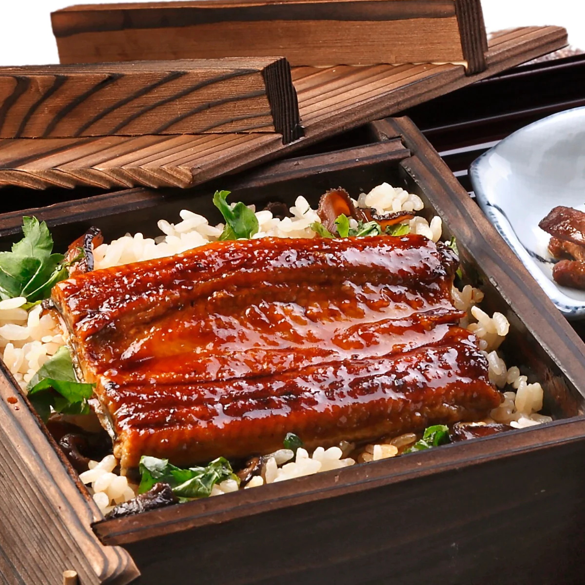

Unagi

Unadon or Grilled Eel Rice Bowl is a beloved Japanese dish consisting of steamed rice topped with grilled eels
that are glazed with a sweetened soy-based sauce (called tare) and caramelized, preferably over a charcoal fire.
Ingredients:
Unagi (Eel) fillets
Unagi sauce
Steamed rice
Homepage